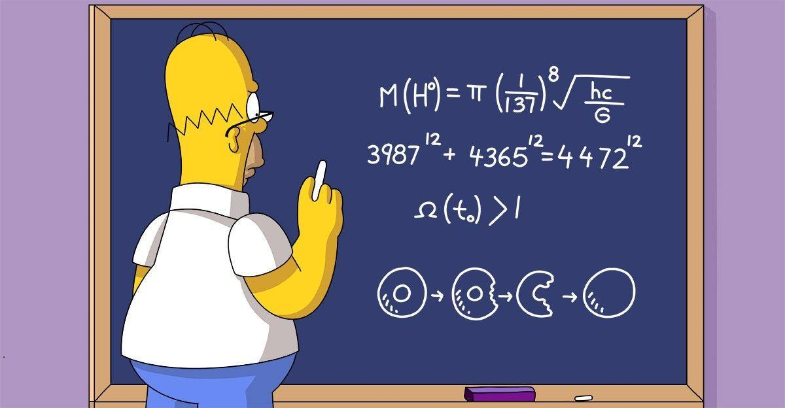
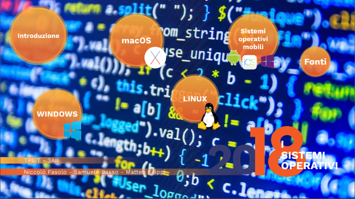
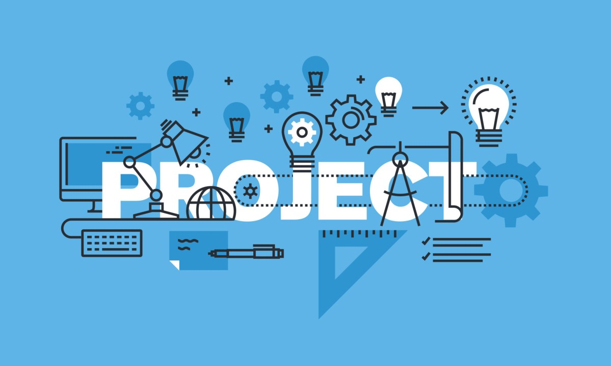
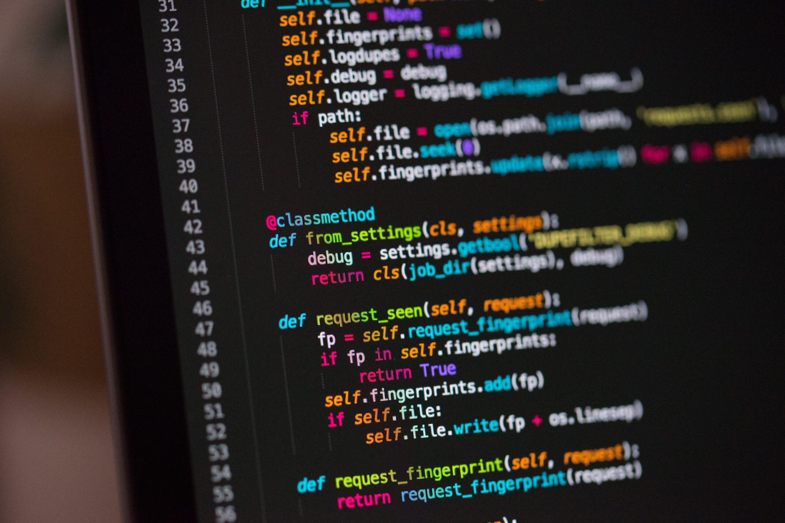

Materie Scolastiche
Italiano - Prof.ssa Raffaeli R.
Inglese - Prof.ssa Lorusso L.

Storia - Prof.ssa Raffaeli R.

Matematica - Prof. Taliani A.
Scienze Motorie - Prof. Rosini D.
Religione - Prof.ssa Rinaldi G.
Sistemi e Reti - Prof. Bartoloni A. e Prof. Cacciamani A.

TPSIT - Prof. Pallotta E. e Prof.ssa Zingaretti E.

GPOI - Prof. Arcangeli M.
Intelligenza Artificiale - Prof. Falcionelli N. e Prof.ssa Zingaretti E.

Informatica - Prof. Falcionelli N. e Prof. Aquilanti M.
Ed. Civica - Interdisciplinare
Progetti scolastici
Il progetto a cui ho partecipato durante il quinto anno scolastico è il progeto per la Protezione Civile. Questo consisteva nella creazione di un'Applicazione Web da consegnare ai Vigili del fuoco per il controllo e monitoraggio degli idranti che si trovano in Italia. Ogni idrante può essere modificato e controllato con le sue caratteristiche, possono essere scritte delle segnalazioni per eventuali problemi e inoltre è presente la sezione di Login per gli utenti e una mappa per la visualizzazione. Per lo sviluppo del progetto in classe ci siamo divisi in più gruppi per gestire le sezioni di FrontEnd e BackEnd rimanendo sempre tutti collegati tramite la piattaforma GitHub.